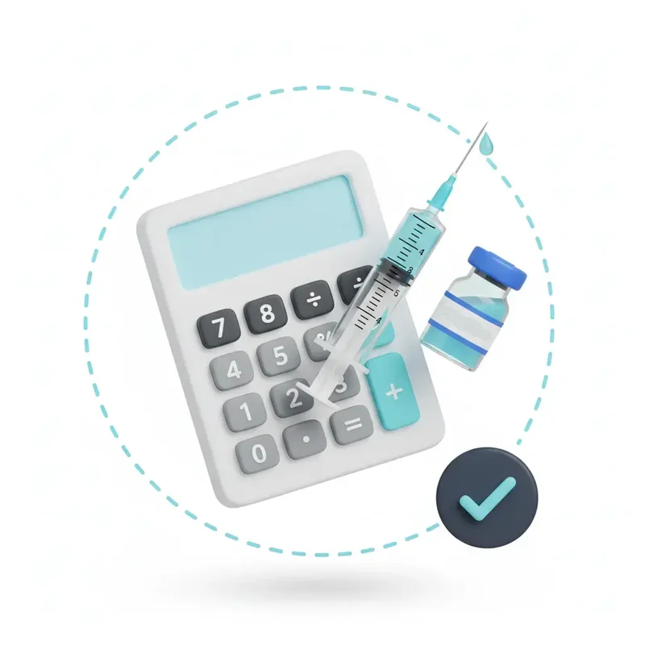
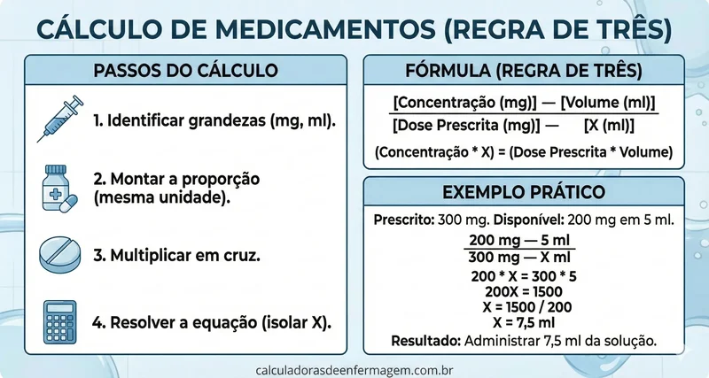

Cálculo de Medicamentos
Quanto devo aspirar?
Calculadora de Medicamentos
Insira as informações abaixo:

Clique no botão calcular abaixo
Regra do cálculo
Preparo de medicação com a concentração definida ou já dissolvida - Exemplo
Prescrição Médica: 120 mg de aminofilina.
Disponível: ampola de aminofilina 10 ml c/ 240 mg (240mg/10ml).
Para resolver este exercício é só colocar o que se conhece (Disponível) na linha de cima e o que se quer (Prescrição) na linha de baixo. Lembre-se que unidade igual deve ser colocada embaixo de unidade igual.
240mg --- 10 ml
120mg --- x
x . 240 = 120 . 10
x = 1200 / 240
x = 5ml
Resposta: Deve-se aspirar 5 ml desta ampola que corresponderá a 120 mg de aminofilina.

Atenção:
Em caso de dúvidas, procure seu enfermeiro responsável e faça a dupla checagem. Jamais prepare e administre medicações com dúvidas. É um direito e dever do profissional de enfermagem pedir ajuda.
Enfermeiro, cabe a você avaliar o grau de conhecimento em preparo e administração de medicamentos dos seus colaboradores. Realize educação em saúde constante. EVITE ERROS DE MEDICAÇÃO E EVENTOS ADVERSOS.
Alinhado com a Meta Internacional nº 3 de Segurança do Paciente.
Os 9 Certos da Administração:
- 1 Paciente certo
- 2 Medicamento certo
- 3 Hora certa
- 4 Dose certa
- 5 Via certa
- 6 Registro certo
- 7 Orientação certa
- 8 Resposta certa
- 9 Validade certa
Conselho Regional de Enfermagem de São Paulo - COREN-SP. Cartilha de Cálculo de Medicamentos.